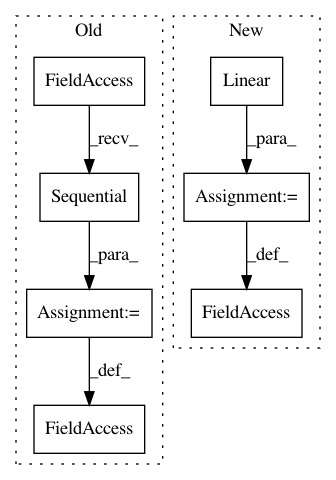

5f3cddb62a332dc7d98dfacebf94d10bf7874600,arch/example.py,CNN,__init__,#CNN#,22
Before Change
assert len(block_params) + 1 == len(features)
blocks = [HighwayBlock(features[i], features[i + 1], **common_block_params, **block_params[i]) for i in range(len(block_params))]
self.blocks = torch.nn.Sequential(*blocks)
def forward(self, inp): // pylint: disable=W
"""
:param inp: [batch, features, x, y, z]
After Change
blocks = [HighwayBlock(features[i], features[i + 1], **common_block_params, **block_params[i]) for i in range(len(block_params))]
self.sequence = torch.nn.Sequential(
*blocks,
AvgSpacial(),
torch.nn.Linear(20, 50),
torch.nn.ReLU(),
torch.nn.Linear(50, 2),
)
def forward(self, inp): // pylint: disable=W
"""
:param inp: [batch, features, x, y, z]
In pattern: SUPERPATTERN
Frequency: 3
Non-data size: 7
Instances
Project Name: mariogeiger/se3cnn
Commit Name: 5f3cddb62a332dc7d98dfacebf94d10bf7874600
Time: 2018-01-17
Author: geiger.mario@gmail.com
File Name: arch/example.py
Class Name: CNN
Method Name: __init__
Project Name: rusty1s/pytorch_geometric
Commit Name: d08f673481a2cfaa0ce702e80cc22cdd25e600e5
Time: 2020-05-31
Author: matthias.fey@tu-dortmund.de
File Name: torch_geometric/nn/models/schnet.py
Class Name: CFConv
Method Name: __init__
Project Name: rusty1s/pytorch_geometric
Commit Name: 6ad34e5887f847aeb9f681e8f290d5877b76e52b
Time: 2020-05-13
Author: matthias.fey@tu-dortmund.de
File Name: torch_geometric/nn/models/schnet.py
Class Name: CFConv
Method Name: __init__